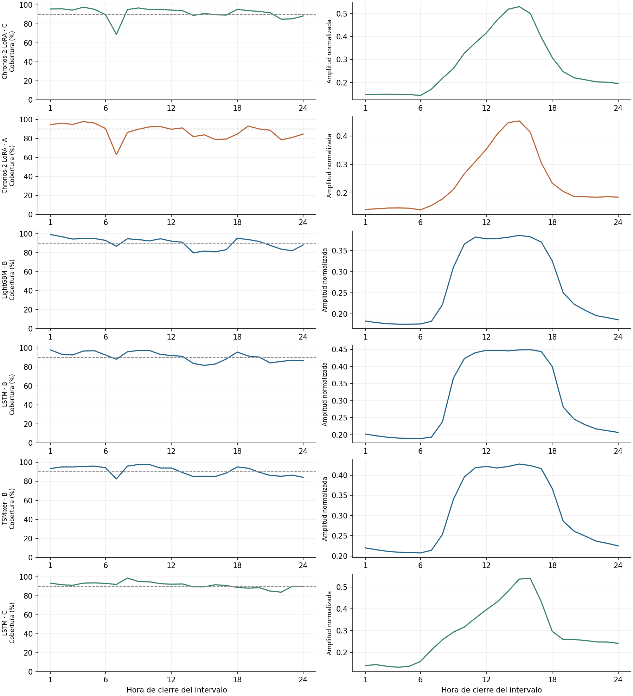
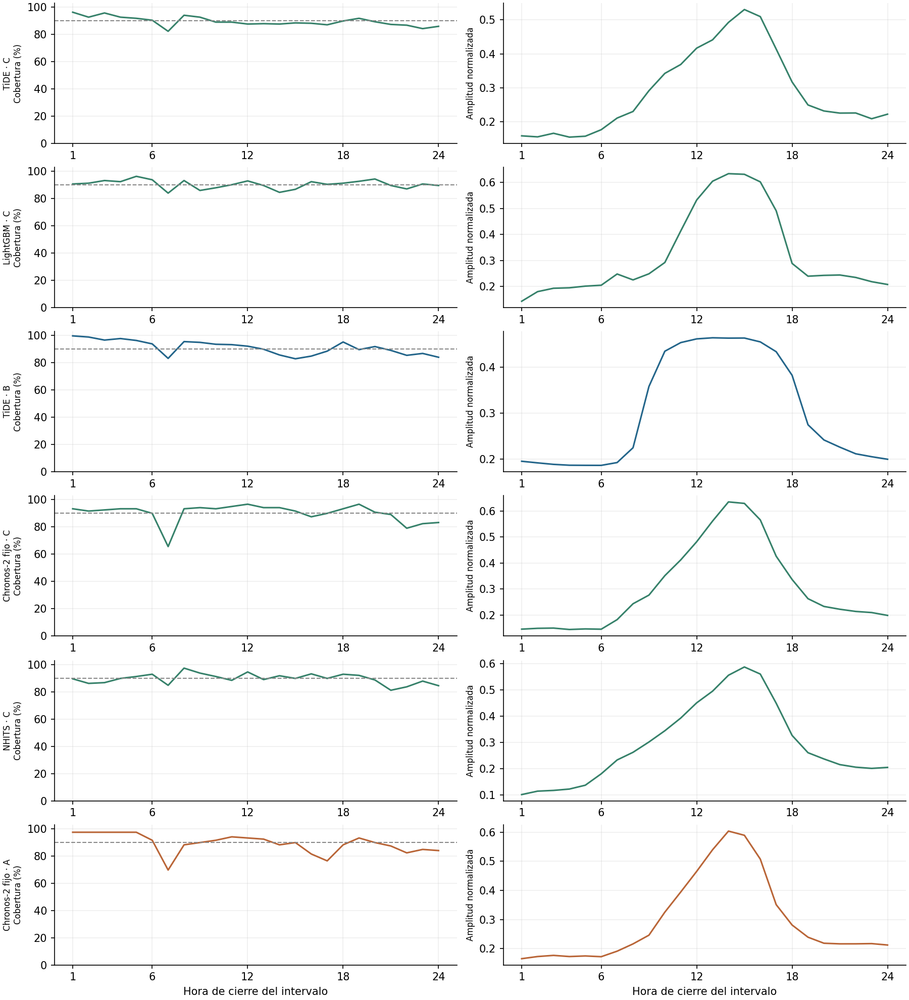
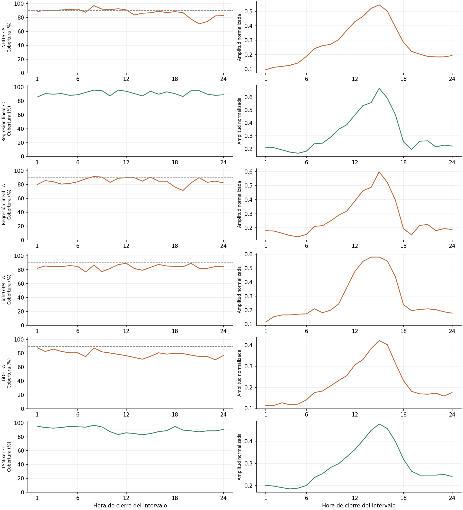
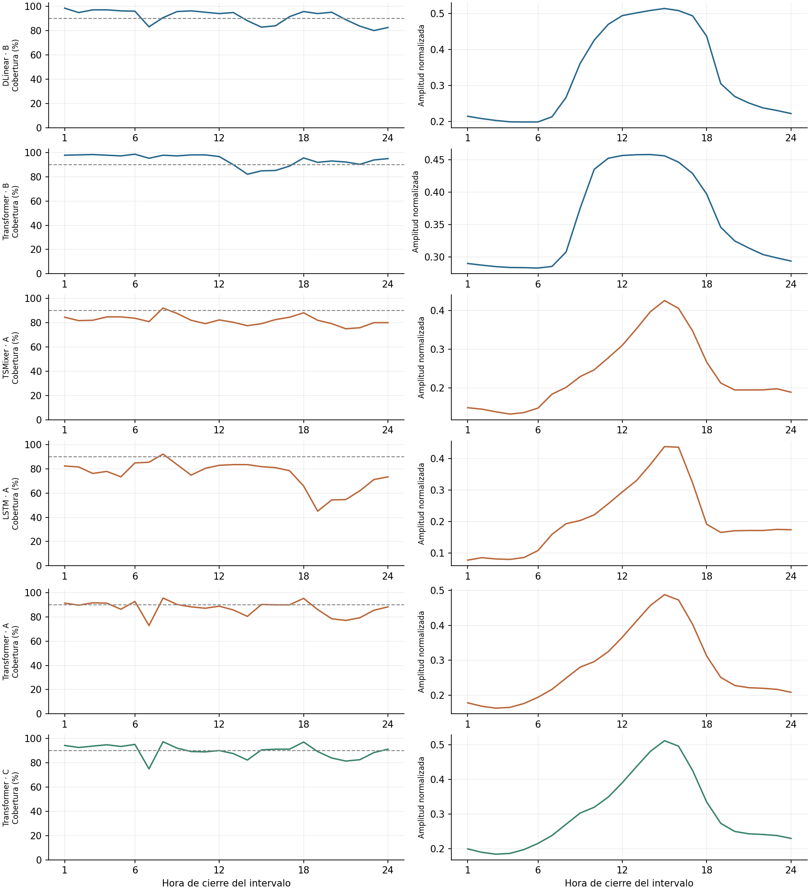
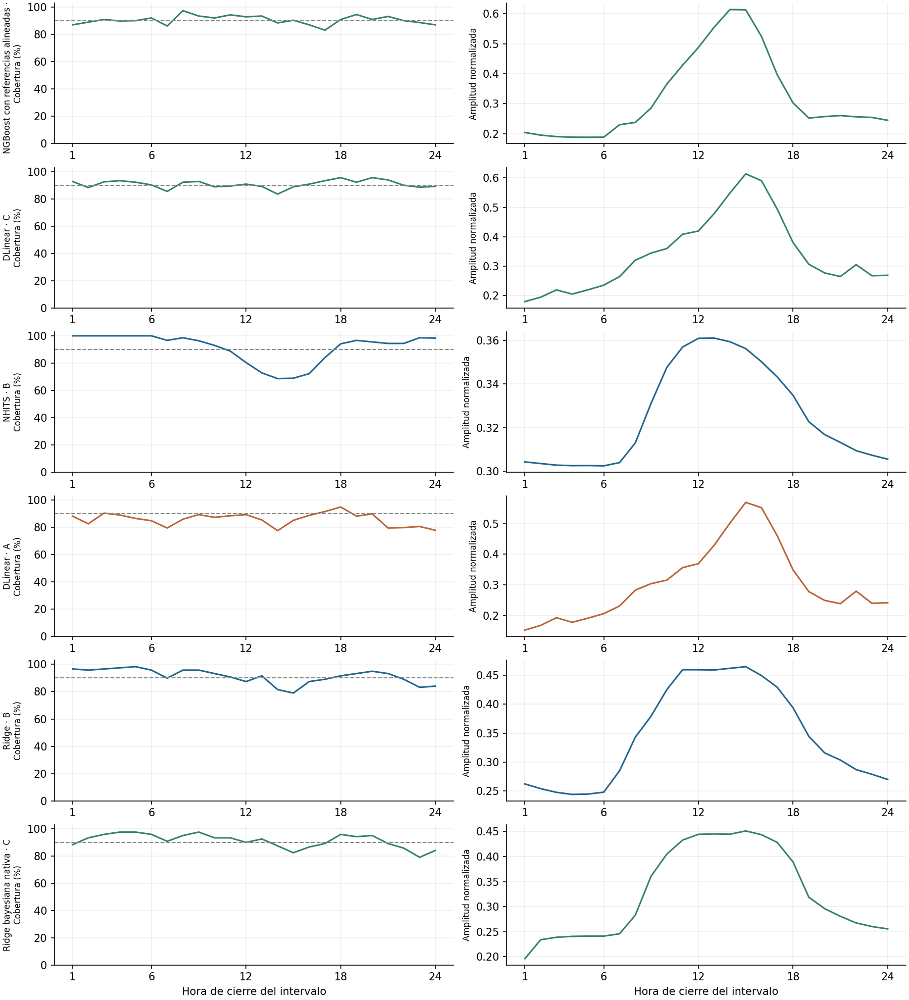
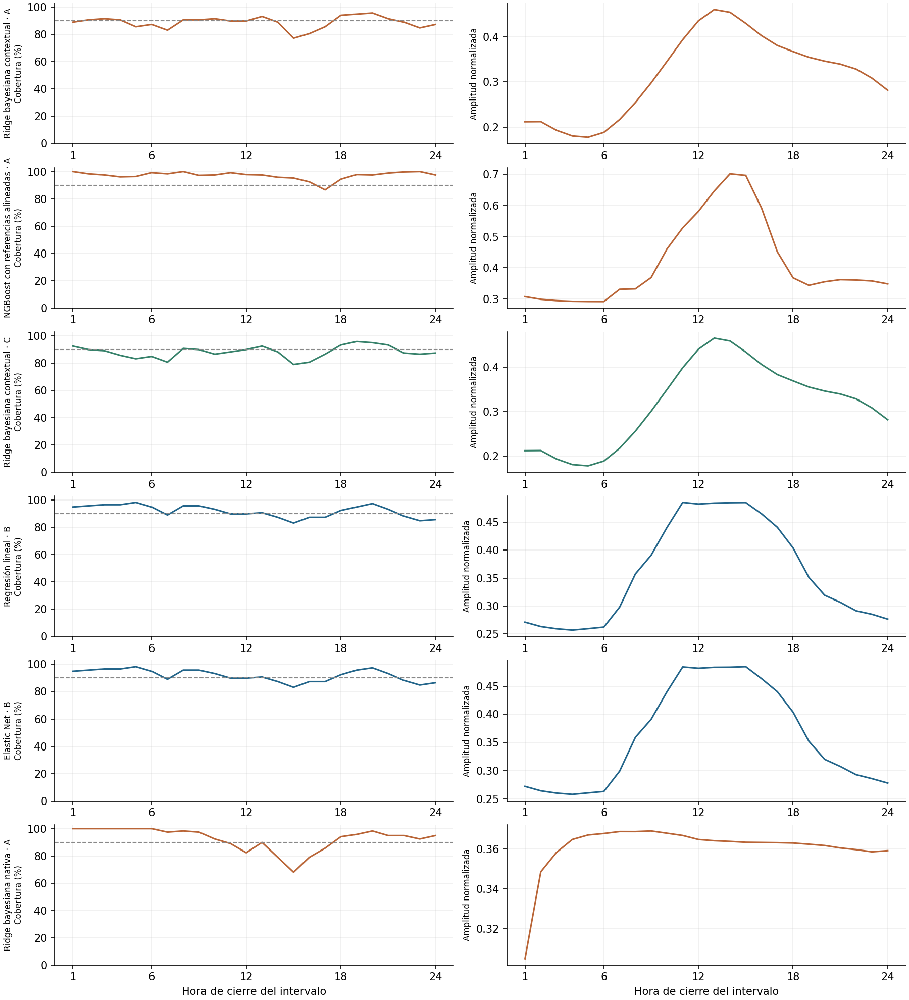
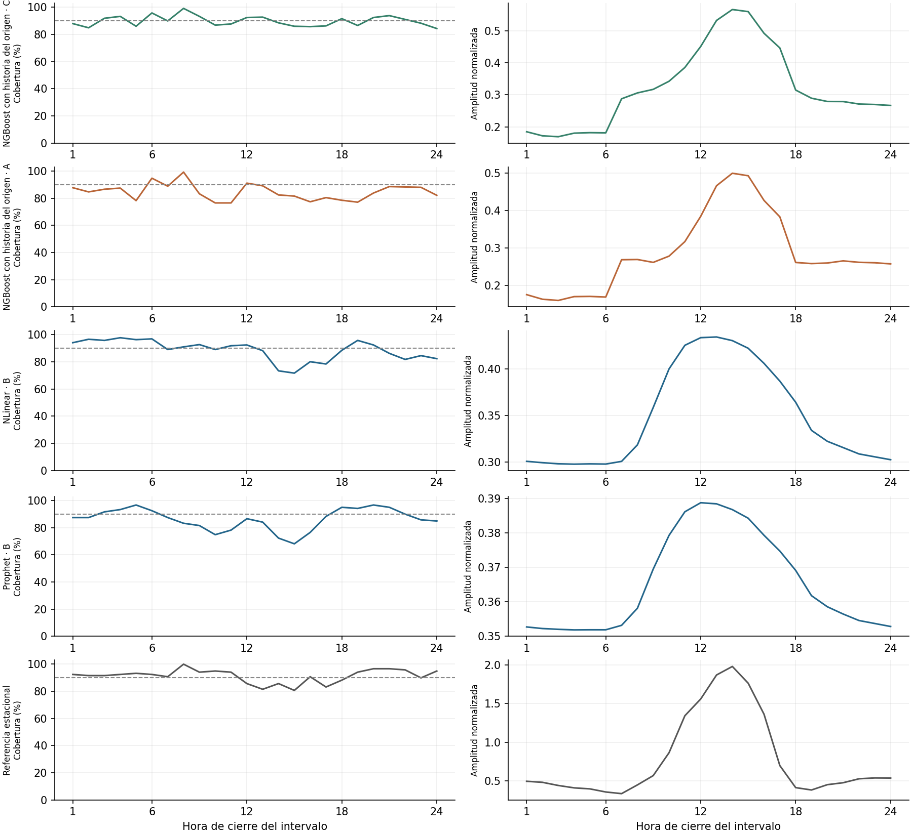
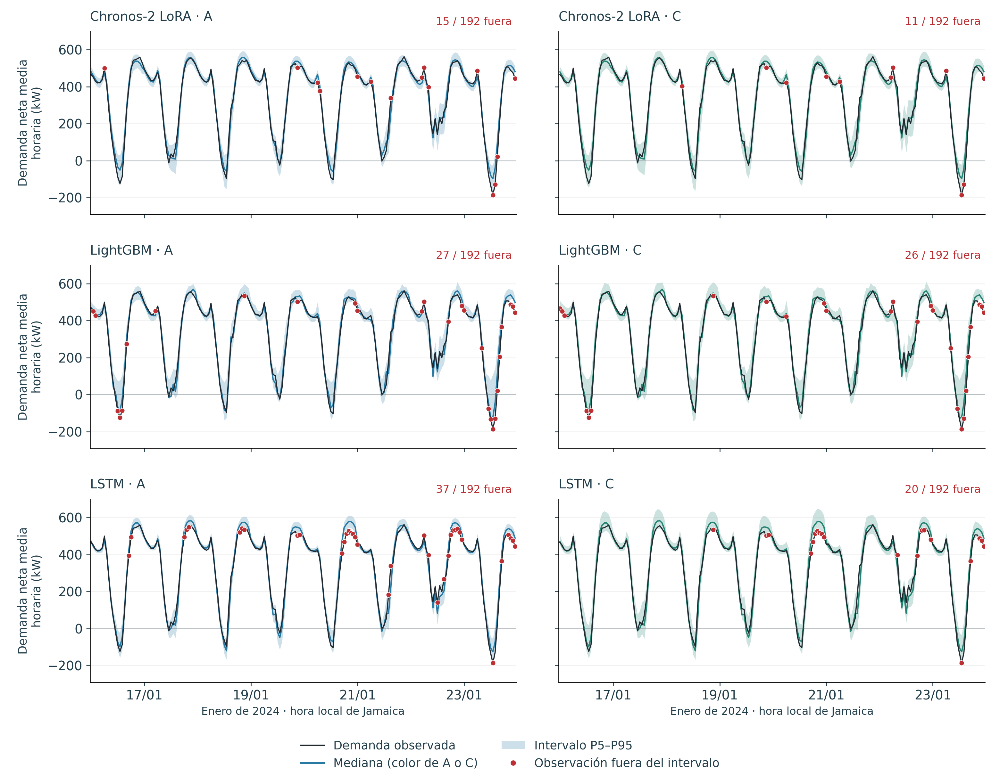
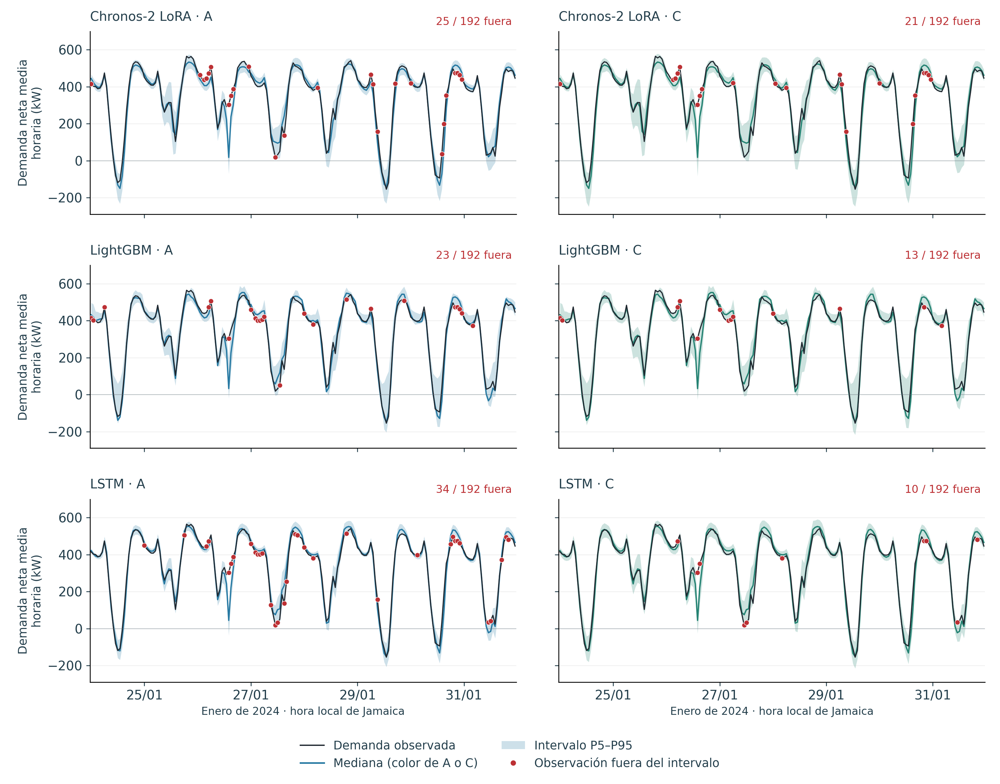

Suplemento S4. Resultados completos de testeo
Este suplemento desagrega los resultados del testeo de enero–abril de 2024 del capítulo 5. Las configuraciones elegidas en validación se conservaron y los modelos entrenables se reajustaron antes de cada mes con la historia disponible, según la Sección 4.9. Los calibradores incorporaron los errores después de observar cada día. A identifica el aprendizaje probabilístico directo; B, el pronóstico puntual con calibración conforme; y C, la calibración de los cuantiles del predictor de A.
Se evaluaron 2.856 horas: 744 de enero, 672 de febrero, 744 de marzo y 696 de abril. Febrero excluye el día 4 y abril comprende los días 1 a 29. El agregado contiene 1.004 hogares en enero, 985 en febrero y marzo y 980 en abril. Todos los modelos comparten las mismas observaciones dentro de cada mes; el Cuadro 5.5 y el Anexo A documentan su disponibilidad y tratamiento. Las métricas de los cuadros mensuales se calculan por ejecución y se promedian cuando hay tres semillas.
S4.1 Desempeño de enero de 2024
El cuadro reúne los cuarenta y un modelos sobre las 744 horas y 1.004 hogares del mes. La pérdida pinball, el nMAE y la amplitud están normalizados; la cobertura se expresa como porcentaje de observaciones dentro del intervalo P5–P95.
Cuadro S4.1. Desempeño del testeo de enero de 2024.
| Modelo | Procedimiento | Pérdida pinball normalizada | nMAE P50 | Cobertura observada | Amplitud normalizada |
|---|---|---|---|---|---|
| LightGBM cuantílico | A | 0,015580 | 0,05729 | 87,28 % | 0,252 |
| LightGBM + calibración de cuantiles | C | 0,015684 | 0,05729 | 91,04 % | 0,279 |
| LightGBM + conforme | B | 0,015883 | 0,05769 | 90,91 % | 0,259 |
| TiDE + calibración de cuantiles | C | 0,016506 | 0,06143 | 91,40 % | 0,275 |
| TiDE cuantílico | A | 0,016830 | 0,06143 | 82,84 % | 0,211 |
| LSTM + calibración de cuantiles | C | 0,016855 | 0,06377 | 91,40 % | 0,285 |
| TiDE + conforme | B | 0,016857 | 0,06070 | 92,43 % | 0,292 |
| LSTM cuantílica | A | 0,016905 | 0,06377 | 78,09 % | 0,199 |
| Regresión lineal cuantílica | A | 0,017255 | 0,06543 | 87,63 % | 0,275 |
| NHITS + calibración de cuantiles | C | 0,017277 | 0,06630 | 89,92 % | 0,287 |
| NHITS | A | 0,017347 | 0,06630 | 87,59 % | 0,267 |
| Chronos-2 LoRA + calibración de cuantiles | C | 0,017429 | 0,06558 | 89,25 % | 0,272 |
| TSMixer cuantílico | A | 0,017454 | 0,06584 | 88,04 % | 0,245 |
| TSMixer + conforme | B | 0,017469 | 0,06393 | 92,03 % | 0,299 |
| Chronos-2 LoRA | A | 0,017570 | 0,06558 | 85,66 % | 0,234 |
| TSMixer + calibración de cuantiles | C | 0,017574 | 0,06584 | 93,91 % | 0,295 |
| NGBoost con referencias alineadas + calibración de cuantiles | C | 0,017587 | 0,06665 | 90,82 % | 0,285 |
| Regresión lineal cuantílica + calibración de cuantiles | C | 0,017694 | 0,06543 | 91,13 % | 0,312 |
| Ridge + conforme | B | 0,017769 | 0,06447 | 91,53 % | 0,311 |
| LSTM + conforme | B | 0,017783 | 0,06507 | 92,79 % | 0,322 |
| Ridge bayesiana con dispersión contextual | A | 0,017869 | 0,06616 | 93,82 % | 0,319 |
| Ridge bayesiana con dispersión nativa + calibración de cuantiles | C | 0,017976 | 0,06616 | 90,73 % | 0,313 |
| NGBoost con historia del origen | A | 0,017982 | 0,06910 | 88,98 % | 0,260 |
| NGBoost con historia del origen + calibración de cuantiles | C | 0,017983 | 0,06910 | 89,56 % | 0,283 |
| Transformer + conforme | B | 0,018003 | 0,06503 | 95,97 % | 0,346 |
| Ridge bayesiana con dispersión contextual + calibración de cuantiles | C | 0,018255 | 0,06616 | 91,26 % | 0,324 |
| DLinear cuantílico | A | 0,018447 | 0,06830 | 89,11 % | 0,303 |
| Ridge bayesiana con dispersión nativa | A | 0,018448 | 0,06616 | 94,76 % | 0,353 |
| NHITS puntual + conforme | B | 0,018453 | 0,06684 | 94,09 % | 0,331 |
| NGBoost con referencias alineadas | A | 0,018465 | 0,06665 | 97,54 % | 0,382 |
| DLinear + calibración de cuantiles | C | 0,018541 | 0,06830 | 90,14 % | 0,316 |
| Transformer cuantílico | A | 0,018724 | 0,07164 | 86,92 % | 0,274 |
| Transformer + calibración de cuantiles | C | 0,018820 | 0,07164 | 90,28 % | 0,295 |
| Chronos-2 con pesos fijos + calibración de cuantiles | C | 0,018868 | 0,07042 | 87,63 % | 0,301 |
| DLinear + conforme | B | 0,019043 | 0,07027 | 89,47 % | 0,311 |
| Chronos-2 con pesos fijos | A | 0,019063 | 0,07042 | 87,77 % | 0,291 |
| Regresión lineal + conforme | B | 0,019187 | 0,06976 | 90,46 % | 0,320 |
| Elastic Net + conforme | B | 0,019189 | 0,06976 | 90,46 % | 0,320 |
| Prophet + conforme | B | 0,021298 | 0,07990 | 89,92 % | 0,345 |
| NLinear + conforme | B | 0,026861 | 0,10627 | 86,69 % | 0,371 |
| Referencia estacional | Referencia | 0,034409 | 0,12609 | 97,85 % | 0,763 |
Fuente: elaboración propia a partir de las predicciones de testeo.
S4.2 Desempeño de febrero de 2024
El cuadro reúne los cuarenta y un modelos sobre las 672 horas y 985 hogares del mes. La pérdida pinball, el nMAE y la amplitud están normalizados; la cobertura se expresa como porcentaje de observaciones dentro del intervalo P5–P95.
Cuadro S4.2. Desempeño del testeo de febrero de 2024.
| Modelo | Procedimiento | Pérdida pinball normalizada | nMAE P50 | Cobertura observada | Amplitud normalizada |
|---|---|---|---|---|---|
| Chronos-2 LoRA | A | 0,016696 | 0,06388 | 88,69 % | 0,270 |
| Chronos-2 LoRA + calibración de cuantiles | C | 0,016785 | 0,06388 | 93,50 % | 0,315 |
| LightGBM + conforme | B | 0,019455 | 0,07474 | 88,05 % | 0,288 |
| Chronos-2 con pesos fijos | A | 0,019791 | 0,07581 | 91,37 % | 0,352 |
| Chronos-2 con pesos fijos + calibración de cuantiles | C | 0,019824 | 0,07581 | 91,52 % | 0,372 |
| TiDE + conforme | B | 0,020317 | 0,07816 | 89,58 % | 0,324 |
| LSTM + conforme | B | 0,020521 | 0,07673 | 88,84 % | 0,322 |
| NHITS + calibración de cuantiles | C | 0,020731 | 0,08317 | 87,60 % | 0,317 |
| Regresión lineal cuantílica + calibración de cuantiles | C | 0,021065 | 0,08094 | 86,46 % | 0,320 |
| TiDE + calibración de cuantiles | C | 0,021082 | 0,08233 | 86,66 % | 0,307 |
| TSMixer + conforme | B | 0,021140 | 0,07988 | 88,89 % | 0,336 |
| NHITS | A | 0,021562 | 0,08317 | 82,39 % | 0,287 |
| LSTM + calibración de cuantiles | C | 0,021823 | 0,08852 | 88,29 % | 0,307 |
| DLinear + conforme | B | 0,021928 | 0,08414 | 91,17 % | 0,363 |
| Regresión lineal cuantílica | A | 0,022011 | 0,08094 | 74,26 % | 0,250 |
| NHITS puntual + conforme | B | 0,022236 | 0,08143 | 89,83 % | 0,350 |
| LightGBM + calibración de cuantiles | C | 0,022428 | 0,08335 | 88,44 % | 0,387 |
| DLinear + calibración de cuantiles | C | 0,022506 | 0,08526 | 87,15 % | 0,351 |
| Transformer + calibración de cuantiles | C | 0,022893 | 0,08915 | 86,86 % | 0,314 |
| TiDE cuantílico | A | 0,023037 | 0,08233 | 72,72 % | 0,225 |
| TSMixer + calibración de cuantiles | C | 0,023039 | 0,08872 | 83,18 % | 0,293 |
| Transformer cuantílico | A | 0,023058 | 0,08915 | 82,54 % | 0,283 |
| DLinear cuantílico | A | 0,023409 | 0,08526 | 77,93 % | 0,296 |
| Ridge bayesiana con dispersión nativa + calibración de cuantiles | C | 0,023451 | 0,09287 | 90,18 % | 0,379 |
| Transformer + conforme | B | 0,023603 | 0,09117 | 88,19 % | 0,381 |
| Ridge bayesiana con dispersión contextual + calibración de cuantiles | C | 0,023952 | 0,09287 | 82,29 % | 0,320 |
| Ridge bayesiana con dispersión nativa | A | 0,023985 | 0,09287 | 91,37 % | 0,395 |
| TSMixer cuantílico | A | 0,024081 | 0,08872 | 72,42 % | 0,236 |
| LightGBM cuantílico | A | 0,024183 | 0,08335 | 77,88 % | 0,339 |
| Ridge bayesiana con dispersión contextual | A | 0,024185 | 0,09287 | 79,61 % | 0,309 |
| Ridge + conforme | B | 0,024515 | 0,09443 | 87,65 % | 0,394 |
| NGBoost con referencias alineadas + calibración de cuantiles | C | 0,024761 | 0,10007 | 87,05 % | 0,378 |
| NLinear + conforme | B | 0,025147 | 0,09672 | 86,46 % | 0,363 |
| NGBoost con referencias alineadas | A | 0,025404 | 0,10007 | 93,75 % | 0,463 |
| Regresión lineal + conforme | B | 0,025478 | 0,09813 | 89,29 % | 0,420 |
| Elastic Net + conforme | B | 0,025514 | 0,09817 | 89,43 % | 0,420 |
| LSTM cuantílica | A | 0,025679 | 0,08852 | 63,54 % | 0,215 |
| NGBoost con historia del origen + calibración de cuantiles | C | 0,027601 | 0,11553 | 87,55 % | 0,382 |
| Prophet + conforme | B | 0,029332 | 0,11599 | 83,04 % | 0,380 |
| NGBoost con historia del origen | A | 0,029724 | 0,11553 | 74,60 % | 0,335 |
| Referencia estacional | Referencia | 0,066620 | 0,27033 | 85,86 % | 0,836 |
Fuente: elaboración propia a partir de las predicciones de testeo.
S4.3 Desempeño de marzo de 2024
El cuadro reúne los cuarenta y un modelos sobre las 744 horas y 985 hogares del mes. La pérdida pinball, el nMAE y la amplitud están normalizados; la cobertura se expresa como porcentaje de observaciones dentro del intervalo P5–P95.
Cuadro S4.3. Desempeño del testeo de marzo de 2024.
| Modelo | Procedimiento | Pérdida pinball normalizada | nMAE P50 | Cobertura observada | Amplitud normalizada |
|---|---|---|---|---|---|
| LightGBM + conforme | B | 0,014648 | 0,05542 | 91,67 % | 0,273 |
| Chronos-2 LoRA + calibración de cuantiles | C | 0,014783 | 0,05660 | 93,28 % | 0,266 |
| Chronos-2 LoRA | A | 0,014919 | 0,05660 | 89,25 % | 0,228 |
| LSTM + conforme | B | 0,015513 | 0,05804 | 91,80 % | 0,299 |
| TSMixer + conforme | B | 0,015626 | 0,05896 | 93,41 % | 0,301 |
| TSMixer cuantílico | A | 0,015753 | 0,06167 | 87,90 % | 0,236 |
| TSMixer + calibración de cuantiles | C | 0,015855 | 0,06167 | 93,91 % | 0,290 |
| TiDE + conforme | B | 0,016072 | 0,06070 | 92,70 % | 0,299 |
| TiDE + calibración de cuantiles | C | 0,016075 | 0,06221 | 91,53 % | 0,292 |
| LightGBM cuantílico | A | 0,016197 | 0,05878 | 86,02 % | 0,273 |
| LightGBM + calibración de cuantiles | C | 0,016292 | 0,05878 | 90,77 % | 0,323 |
| TiDE cuantílico | A | 0,016356 | 0,06221 | 82,08 % | 0,221 |
| Chronos-2 con pesos fijos + calibración de cuantiles | C | 0,016389 | 0,06371 | 91,67 % | 0,274 |
| Chronos-2 con pesos fijos | A | 0,016542 | 0,06371 | 89,78 % | 0,265 |
| NHITS + calibración de cuantiles | C | 0,016543 | 0,06381 | 91,17 % | 0,291 |
| NHITS | A | 0,016552 | 0,06381 | 88,93 % | 0,274 |
| Transformer + conforme | B | 0,016674 | 0,06121 | 96,19 % | 0,361 |
| Regresión lineal cuantílica | A | 0,016840 | 0,06428 | 86,29 % | 0,270 |
| LSTM + calibración de cuantiles | C | 0,016846 | 0,06649 | 90,73 % | 0,293 |
| Regresión lineal cuantílica + calibración de cuantiles | C | 0,016949 | 0,06428 | 93,82 % | 0,339 |
| DLinear + conforme | B | 0,017585 | 0,06679 | 94,35 % | 0,342 |
| LSTM cuantílica | A | 0,017589 | 0,06649 | 77,69 % | 0,208 |
| Transformer cuantílico | A | 0,017593 | 0,06948 | 89,34 % | 0,280 |
| Transformer + calibración de cuantiles | C | 0,017698 | 0,06948 | 90,77 % | 0,304 |
| NHITS puntual + conforme | B | 0,017720 | 0,06570 | 92,38 % | 0,326 |
| DLinear + calibración de cuantiles | C | 0,018000 | 0,06783 | 94,40 % | 0,361 |
| DLinear cuantílico | A | 0,018154 | 0,06783 | 86,83 % | 0,314 |
| NGBoost con referencias alineadas + calibración de cuantiles | C | 0,018192 | 0,07097 | 92,25 % | 0,333 |
| Ridge bayesiana con dispersión nativa + calibración de cuantiles | C | 0,018543 | 0,07563 | 93,82 % | 0,322 |
| Ridge bayesiana con dispersión contextual | A | 0,018904 | 0,07563 | 95,83 % | 0,354 |
| NGBoost con referencias alineadas | A | 0,018989 | 0,07097 | 98,70 % | 0,421 |
| Ridge bayesiana con dispersión contextual + calibración de cuantiles | C | 0,019065 | 0,07563 | 94,89 % | 0,353 |
| Ridge + conforme | B | 0,019162 | 0,07303 | 94,35 % | 0,365 |
| Ridge bayesiana con dispersión nativa | A | 0,019338 | 0,07563 | 94,35 % | 0,364 |
| Regresión lineal + conforme | B | 0,019395 | 0,07412 | 94,49 % | 0,375 |
| Elastic Net + conforme | B | 0,019419 | 0,07417 | 94,49 % | 0,376 |
| NGBoost con historia del origen | A | 0,019562 | 0,07842 | 86,92 % | 0,288 |
| NGBoost con historia del origen + calibración de cuantiles | C | 0,019653 | 0,07842 | 89,74 % | 0,328 |
| NLinear + conforme | B | 0,019676 | 0,07463 | 91,35 % | 0,342 |
| Prophet + conforme | B | 0,028475 | 0,11662 | 84,27 % | 0,396 |
| Referencia estacional | Referencia | 0,049450 | 0,19236 | 92,20 % | 0,790 |
Fuente: elaboración propia a partir de las predicciones de testeo.
S4.4 Desempeño de abril de 2024
El cuadro reúne los cuarenta y un modelos sobre las 696 horas y 980 hogares del mes. La pérdida pinball, el nMAE y la amplitud están normalizados; la cobertura se expresa como porcentaje de observaciones dentro del intervalo P5–P95.
Cuadro S4.4. Desempeño del testeo de abril de 2024.
| Modelo | Procedimiento | Pérdida pinball normalizada | nMAE P50 | Cobertura observada | Amplitud normalizada |
|---|---|---|---|---|---|
| LightGBM + conforme | B | 0,015224 | 0,05819 | 90,42 % | 0,244 |
| Chronos-2 LoRA + calibración de cuantiles | C | 0,015232 | 0,05917 | 91,43 % | 0,256 |
| Chronos-2 LoRA | A | 0,015477 | 0,05917 | 85,92 % | 0,224 |
| LSTM + calibración de cuantiles | C | 0,015620 | 0,06246 | 94,11 % | 0,267 |
| LSTM + conforme | B | 0,015899 | 0,06093 | 90,71 % | 0,272 |
| LSTM cuantílica | A | 0,016110 | 0,06246 | 81,56 % | 0,205 |
| Chronos-2 con pesos fijos + calibración de cuantiles | C | 0,016600 | 0,06465 | 89,80 % | 0,274 |
| Chronos-2 con pesos fijos | A | 0,016708 | 0,06465 | 88,65 % | 0,269 |
| DLinear + conforme | B | 0,016718 | 0,06400 | 91,33 % | 0,305 |
| NGBoost con referencias alineadas + calibración de cuantiles | C | 0,016884 | 0,06755 | 92,19 % | 0,290 |
| TSMixer + conforme | B | 0,016906 | 0,06547 | 90,04 % | 0,277 |
| Transformer cuantílico | A | 0,016960 | 0,06724 | 89,46 % | 0,274 |
| Transformer + calibración de cuantiles | C | 0,017056 | 0,06724 | 91,24 % | 0,289 |
| LightGBM + calibración de cuantiles | C | 0,017239 | 0,06819 | 91,62 % | 0,297 |
| Regresión lineal cuantílica + calibración de cuantiles | C | 0,017274 | 0,06975 | 92,39 % | 0,288 |
| Regresión lineal + conforme | B | 0,017284 | 0,06585 | 92,96 % | 0,321 |
| Elastic Net + conforme | B | 0,017288 | 0,06590 | 93,10 % | 0,322 |
| Regresión lineal cuantílica | A | 0,017289 | 0,06975 | 90,23 % | 0,277 |
| NHITS | A | 0,017359 | 0,06973 | 89,56 % | 0,264 |
| NGBoost con historia del origen + calibración de cuantiles | C | 0,017377 | 0,07014 | 92,48 % | 0,295 |
| Ridge + conforme | B | 0,017418 | 0,06614 | 91,38 % | 0,316 |
| NHITS + calibración de cuantiles | C | 0,017523 | 0,06973 | 89,99 % | 0,281 |
| LightGBM cuantílico | A | 0,017564 | 0,06819 | 84,24 % | 0,256 |
| TiDE + calibración de cuantiles | C | 0,017573 | 0,06844 | 88,41 % | 0,276 |
| NGBoost con historia del origen | A | 0,017610 | 0,07014 | 87,16 % | 0,264 |
| Transformer + conforme | B | 0,017646 | 0,06746 | 94,64 % | 0,336 |
| NGBoost con referencias alineadas | A | 0,017945 | 0,06755 | 98,18 % | 0,395 |
| TiDE cuantílico | A | 0,018111 | 0,06844 | 77,63 % | 0,209 |
| TSMixer + calibración de cuantiles | C | 0,018412 | 0,07221 | 88,31 % | 0,276 |
| TiDE + conforme | B | 0,018428 | 0,07042 | 90,04 % | 0,299 |
| DLinear + calibración de cuantiles | C | 0,018559 | 0,07232 | 91,00 % | 0,334 |
| DLinear cuantílico | A | 0,018575 | 0,07232 | 89,18 % | 0,311 |
| TSMixer cuantílico | A | 0,018885 | 0,07221 | 79,12 % | 0,227 |
| Ridge bayesiana con dispersión nativa + calibración de cuantiles | C | 0,019234 | 0,07610 | 89,80 % | 0,294 |
| NLinear + conforme | B | 0,019360 | 0,07584 | 89,94 % | 0,317 |
| Ridge bayesiana con dispersión contextual | A | 0,019400 | 0,07610 | 85,49 % | 0,279 |
| NHITS puntual + conforme | B | 0,019442 | 0,07115 | 88,79 % | 0,296 |
| Ridge bayesiana con dispersión contextual + calibración de cuantiles | C | 0,019560 | 0,07610 | 83,48 % | 0,268 |
| Ridge bayesiana con dispersión nativa | A | 0,020027 | 0,07610 | 89,94 % | 0,332 |
| Prophet + conforme | B | 0,021069 | 0,08244 | 87,64 % | 0,341 |
| Referencia estacional | Referencia | 0,044148 | 0,17707 | 88,65 % | 0,728 |
Fuente: elaboración propia a partir de las predicciones de testeo.
S4.5 Pérdida por semilla en el testeo completo
Cada columna de semilla promedia los cuatro valores mensuales de pérdida pinball normalizada. La desviación estándar muestral se calcula entre las tres ejecuciones.
Cuadro S4.5. Pérdida pinball normalizada por semilla en el testeo de enero–abril.
| Modelo | Procedimiento | Semilla 42 | Semilla 1 | Semilla 2 | Desviación estándar |
|---|---|---|---|---|---|
| Chronos-2 LoRA + calibración de cuantiles | C | 0,016159 | 0,016080 | 0,015932 | 0,000115 |
| Chronos-2 LoRA | A | 0,016298 | 0,016162 | 0,016036 | 0,000131 |
| LightGBM + conforme | B | 0,016323 | 0,016317 | 0,016268 | 0,000030 |
| LSTM + conforme | B | 0,017569 | 0,017087 | 0,017631 | 0,000298 |
| TSMixer + conforme | B | 0,017794 | 0,017813 | 0,017749 | 0,000033 |
| LSTM + calibración de cuantiles | C | 0,017479 | 0,017886 | 0,017993 | 0,000271 |
| TiDE + calibración de cuantiles | C | 0,017931 | 0,017796 | 0,017702 | 0,000115 |
| LightGBM + calibración de cuantiles | C | 0,017894 | 0,017900 | 0,017939 | 0,000024 |
| TiDE + conforme | B | 0,017831 | 0,018120 | 0,017805 | 0,000175 |
| NHITS + calibración de cuantiles | C | 0,017898 | 0,018472 | 0,017686 | 0,000407 |
| NHITS | A | 0,018182 | 0,018628 | 0,017805 | 0,000412 |
| LightGBM cuantílico | A | 0,018386 | 0,018381 | 0,018375 | 0,000006 |
| TiDE cuantílico | A | 0,018661 | 0,018597 | 0,018492 | 0,000085 |
| TSMixer + calibración de cuantiles | C | 0,018267 | 0,019255 | 0,018638 | 0,000499 |
| DLinear + conforme | B | 0,019054 | 0,018670 | 0,018730 | 0,000206 |
| Transformer + conforme | B | 0,018675 | 0,018975 | 0,019294 | 0,000309 |
| TSMixer cuantílico | A | 0,018554 | 0,019590 | 0,018986 | 0,000521 |
| LSTM cuantílica | A | 0,018678 | 0,019423 | 0,019111 | 0,000374 |
| Transformer cuantílico | A | 0,019593 | 0,018897 | 0,018760 | 0,000447 |
| Transformer + calibración de cuantiles | C | 0,019620 | 0,019022 | 0,018708 | 0,000464 |
| NGBoost con referencias alineadas + calibración de cuantiles | C | 0,019264 | 0,019531 | 0,019272 | 0,000152 |
| DLinear + calibración de cuantiles | C | 0,019234 | 0,019546 | 0,019425 | 0,000157 |
| NHITS puntual + conforme | B | 0,020032 | 0,018973 | 0,019383 | 0,000534 |
| DLinear cuantílico | A | 0,019402 | 0,019837 | 0,019699 | 0,000222 |
| NGBoost con referencias alineadas | A | 0,020127 | 0,020301 | 0,020174 | 0,000090 |
| NGBoost con historia del origen + calibración de cuantiles | C | 0,020640 | 0,020605 | 0,020716 | 0,000057 |
| NGBoost con historia del origen | A | 0,021188 | 0,021166 | 0,021304 | 0,000074 |
| NLinear + conforme | B | 0,023375 | 0,022447 | 0,022460 | 0,000532 |
Fuente: elaboración propia a partir de los resultados y registros del experimento.
S4.6 Frecuencias observadas de los tres cuantiles
Cada porcentaje expresa la proporción de observaciones que queda por debajo o coincide con el cuantil pronosticado. Se reúnen todas las horas de enero–abril y luego se promedian las ejecuciones. Los niveles de referencia son 5 %, 50 % y 95 %.
Cuadro S4.6. Frecuencias cuantílicas en el testeo de enero–abril.
| Modelo | Procedimiento | Frecuencia P5 | Frecuencia P50 | Frecuencia P95 |
|---|---|---|---|---|
| Chronos-2 LoRA + calibración de cuantiles | C | 3,00 % | 47,54 % | 94,83 % |
| Chronos-2 LoRA | A | 4,05 % | 47,54 % | 91,42 % |
| LightGBM + conforme | B | 5,40 % | 51,33 % | 95,72 % |
| LSTM + conforme | B | 4,60 % | 52,68 % | 95,69 % |
| TSMixer + conforme | B | 4,62 % | 50,44 % | 95,79 % |
| LSTM + calibración de cuantiles | C | 5,01 % | 54,87 % | 96,16 % |
| TiDE + calibración de cuantiles | C | 4,93 % | 51,16 % | 94,51 % |
| LightGBM + calibración de cuantiles | C | 5,19 % | 51,41 % | 95,69 % |
| TiDE + conforme | B | 4,33 % | 49,91 % | 95,58 % |
| Chronos-2 con pesos fijos + calibración de cuantiles | C | 3,75 % | 50,39 % | 93,87 % |
| NHITS + calibración de cuantiles | C | 5,72 % | 53,64 % | 95,44 % |
| Chronos-2 con pesos fijos | A | 4,34 % | 50,39 % | 93,70 % |
| NHITS | A | 8,70 % | 53,64 % | 95,89 % |
| Regresión lineal cuantílica + calibración de cuantiles | C | 4,41 % | 55,50 % | 95,45 % |
| Regresión lineal cuantílica | A | 9,14 % | 55,50 % | 93,91 % |
| LightGBM cuantílico | A | 9,57 % | 51,41 % | 93,57 % |
| TiDE cuantílico | A | 11,76 % | 51,16 % | 90,76 % |
| TSMixer + calibración de cuantiles | C | 4,81 % | 52,52 % | 94,83 % |
| DLinear + conforme | B | 5,07 % | 53,73 % | 96,66 % |
| Transformer + conforme | B | 4,13 % | 53,29 % | 98,00 % |
| TSMixer cuantílico | A | 9,09 % | 52,52 % | 91,25 % |
| LSTM cuantílica | A | 16,48 % | 54,87 % | 91,89 % |
| Transformer cuantílico | A | 7,31 % | 56,12 % | 94,44 % |
| Transformer + calibración de cuantiles | C | 4,94 % | 56,12 % | 94,77 % |
| NGBoost con referencias alineadas + calibración de cuantiles | C | 5,36 % | 47,90 % | 96,00 % |
| DLinear + calibración de cuantiles | C | 4,70 % | 54,38 % | 95,46 % |
| NHITS puntual + conforme | B | 4,74 % | 49,67 % | 96,09 % |
| DLinear cuantílico | A | 9,33 % | 54,38 % | 95,23 % |
| Ridge + conforme | B | 4,45 % | 48,25 % | 95,76 % |
| Ridge bayesiana con dispersión nativa + calibración de cuantiles | C | 5,64 % | 59,73 % | 96,81 % |
| Ridge bayesiana con dispersión contextual | A | 7,14 % | 59,73 % | 96,11 % |
| NGBoost con referencias alineadas | A | 1,95 % | 47,90 % | 99,05 % |
| Ridge bayesiana con dispersión contextual + calibración de cuantiles | C | 6,51 % | 59,73 % | 94,71 % |
| Regresión lineal + conforme | B | 4,27 % | 48,35 % | 96,11 % |
| Elastic Net + conforme | B | 4,27 % | 48,28 % | 96,18 % |
| Ridge bayesiana con dispersión nativa | A | 4,31 % | 59,73 % | 96,99 % |
| NGBoost con historia del origen + calibración de cuantiles | C | 5,50 % | 56,42 % | 95,34 % |
| NGBoost con historia del origen | A | 9,73 % | 56,42 % | 94,35 % |
| NLinear + conforme | B | 7,27 % | 55,98 % | 95,92 % |
| Prophet + conforme | B | 4,90 % | 41,21 % | 91,18 % |
| Referencia estacional | Referencia | 4,20 % | 53,08 % | 95,52 % |
Fuente: elaboración propia a partir de las predicciones de testeo.
S4.7 Cobertura por contexto en el conjunto de testeo
Se conservan las clasificaciones de la validación, descritas en la Sección 5.5.4 y en S3.7. Las horas con GHI bajo cielo despejado inferior a 20 W/m² integran el grupo de recurso potencial bajo. Las restantes se separan por el cociente GHI/GHI bajo cielo despejado: los valores inferiores al corte de validación, aproximadamente 0,858, corresponden a mayor atenuación. Se utiliza el corte con su precisión completa. Por separado, las mismas observaciones se agrupan en días hábiles, sábados y domingos. Los Cuadros S4.7 y S4.8 permiten comparar esas agrupaciones con los resultados globales.
Condiciones solares en testeo
Cuadro S4.7. Cobertura por condición solar en el testeo de enero–abril.
| Modelo | Procedimiento | Cielo menos atenuado | Cielo más atenuado | Recurso solar bajo |
|---|---|---|---|---|
| Chronos-2 LoRA + calibración de cuantiles | C | 95,84 % | 88,70 % | 90,70 % |
| Chronos-2 LoRA | A | 90,49 % | 79,04 % | 88,58 % |
| LightGBM + conforme | B | 91,85 % | 84,91 % | 91,37 % |
| LSTM + conforme | B | 94,84 % | 85,04 % | 91,14 % |
| TSMixer + conforme | B | 94,92 % | 85,98 % | 90,90 % |
| LSTM + calibración de cuantiles | C | 94,04 % | 89,71 % | 90,05 % |
| TiDE + calibración de cuantiles | C | 91,37 % | 86,17 % | 89,80 % |
| LightGBM + calibración de cuantiles | C | 89,49 % | 90,28 % | 91,14 % |
| TiDE + conforme | B | 94,16 % | 84,60 % | 91,97 % |
| Chronos-2 con pesos fijos + calibración de cuantiles | C | 94,84 % | 89,58 % | 87,68 % |
| NHITS + calibración de cuantiles | C | 94,16 % | 88,95 % | 87,51 % |
| Chronos-2 con pesos fijos | A | 90,89 % | 84,09 % | 90,36 % |
| NHITS | A | 92,93 % | 84,85 % | 84,83 % |
| Regresión lineal cuantílica + calibración de cuantiles | C | 92,81 % | 91,10 % | 90,03 % |
| Regresión lineal cuantílica | A | 88,01 % | 85,61 % | 82,66 % |
| LightGBM cuantílico | A | 83,25 % | 86,17 % | 83,65 % |
| TiDE cuantílico | A | 80,54 % | 76,58 % | 78,98 % |
| TSMixer + calibración de cuantiles | C | 90,77 % | 84,85 % | 91,43 % |
| DLinear + conforme | B | 94,20 % | 87,82 % | 91,48 % |
| Transformer + conforme | B | 95,60 % | 87,44 % | 95,18 % |
| TSMixer cuantílico | A | 86,01 % | 79,17 % | 81,06 % |
| LSTM cuantílica | A | 83,65 % | 76,89 % | 70,28 % |
| Transformer cuantílico | A | 90,49 % | 87,12 % | 85,27 % |
| Transformer + calibración de cuantiles | C | 92,13 % | 88,89 % | 88,89 % |
| NGBoost con referencias alineadas + calibración de cuantiles | C | 93,88 % | 87,06 % | 90,09 % |
| DLinear + calibración de cuantiles | C | 91,57 % | 88,64 % | 91,05 % |
| NHITS puntual + conforme | B | 90,97 % | 73,04 % | 98,04 % |
| DLinear cuantílico | A | 88,25 % | 86,62 % | 84,34 % |
| Ridge + conforme | B | 92,57 % | 85,23 % | 92,77 % |
| Ridge bayesiana con dispersión nativa + calibración de cuantiles | C | 94,12 % | 86,93 % | 91,03 % |
| Ridge bayesiana con dispersión contextual | A | 90,77 % | 84,85 % | 89,42 % |
| NGBoost con referencias alineadas | A | 97,56 % | 93,37 % | 98,17 % |
| Ridge bayesiana con dispersión contextual + calibración de cuantiles | C | 90,05 % | 83,90 % | 88,69 % |
| Regresión lineal + conforme | B | 92,45 % | 87,69 % | 92,97 % |
| Elastic Net + conforme | B | 92,45 % | 87,69 % | 93,11 % |
| Ridge bayesiana con dispersión nativa | A | 91,49 % | 80,68 % | 97,59 % |
| NGBoost con historia del origen + calibración de cuantiles | C | 90,89 % | 89,46 % | 89,40 % |
| NGBoost con historia del origen | A | 83,29 % | 84,60 % | 85,36 % |
| NLinear + conforme | B | 88,73 % | 80,37 % | 91,52 % |
| Prophet + conforme | B | 81,89 % | 80,11 % | 90,90 % |
| Referencia estacional | Referencia | 90,05 % | 87,50 % | 93,37 % |
Fuente: elaboración propia. Porcentajes de cobertura calculados sobre las horas de cada contexto y promediados entre ejecuciones.
Día de la semana en testeo
Cuadro S4.8. Cobertura por tipo de día en el testeo de enero–abril.
| Modelo | Procedimiento | Domingo | Día hábil | Sábado |
|---|---|---|---|---|
| Chronos-2 LoRA + calibración de cuantiles | C | 92,01 % | 91,68 % | 92,40 % |
| Chronos-2 LoRA | A | 84,98 % | 87,52 % | 88,89 % |
| LightGBM + conforme | B | 91,67 % | 90,78 % | 86,68 % |
| LSTM + conforme | B | 92,45 % | 91,51 % | 87,75 % |
| TSMixer + conforme | B | 92,97 % | 90,71 % | 91,75 % |
| LSTM + calibración de cuantiles | C | 92,88 % | 91,81 % | 86,19 % |
| TiDE + calibración de cuantiles | C | 92,45 % | 89,16 % | 89,05 % |
| LightGBM + calibración de cuantiles | C | 93,23 % | 90,58 % | 87,50 % |
| TiDE + conforme | B | 93,66 % | 90,86 % | 90,93 % |
| Chronos-2 con pesos fijos + calibración de cuantiles | C | 87,76 % | 90,60 % | 89,95 % |
| NHITS + calibración de cuantiles | C | 92,71 % | 89,58 % | 87,58 % |
| Chronos-2 con pesos fijos | A | 84,11 % | 90,55 % | 88,24 % |
| NHITS | A | 91,15 % | 87,44 % | 82,27 % |
| Regresión lineal cuantílica + calibración de cuantiles | C | 93,75 % | 90,75 % | 89,95 % |
| Regresión lineal cuantílica | A | 88,02 % | 84,69 % | 82,11 % |
| LightGBM cuantílico | A | 84,98 % | 84,77 % | 79,17 % |
| TiDE cuantílico | A | 83,16 % | 78,44 % | 77,86 % |
| TSMixer + calibración de cuantiles | C | 90,62 % | 89,94 % | 89,87 % |
| DLinear + conforme | B | 92,62 % | 92,18 % | 87,66 % |
| Transformer + conforme | B | 96,27 % | 93,60 % | 92,97 % |
| TSMixer cuantílico | A | 83,51 % | 81,82 % | 82,60 % |
| LSTM cuantílica | A | 75,87 % | 76,45 % | 69,69 % |
| Transformer cuantílico | A | 88,63 % | 86,63 % | 88,32 % |
| Transformer + calibración de cuantiles | C | 91,15 % | 89,24 % | 91,58 % |
| NGBoost con referencias alineadas + calibración de cuantiles | C | 91,67 % | 91,02 % | 87,75 % |
| DLinear + calibración de cuantiles | C | 93,32 % | 90,96 % | 87,34 % |
| NHITS puntual + conforme | B | 92,88 % | 91,91 % | 87,09 % |
| DLinear cuantílico | A | 88,80 % | 86,29 % | 81,21 % |
| Ridge + conforme | B | 93,23 % | 91,18 % | 90,20 % |
| Ridge bayesiana con dispersión nativa + calibración de cuantiles | C | 92,45 % | 91,52 % | 88,24 % |
| Ridge bayesiana con dispersión contextual | A | 87,76 % | 89,58 % | 87,01 % |
| NGBoost con referencias alineadas | A | 99,13 % | 96,88 % | 96,32 % |
| Ridge bayesiana con dispersión contextual + calibración de cuantiles | C | 89,84 % | 88,23 % | 86,52 % |
| Regresión lineal + conforme | B | 94,79 % | 91,72 % | 89,71 % |
| Elastic Net + conforme | B | 94,79 % | 91,76 % | 89,95 % |
| Ridge bayesiana con dispersión nativa | A | 92,45 % | 93,27 % | 89,95 % |
| NGBoost con historia del origen + calibración de cuantiles | C | 91,32 % | 89,73 % | 89,05 % |
| NGBoost con historia del origen | A | 88,45 % | 84,93 % | 79,41 % |
| NLinear + conforme | B | 91,49 % | 89,31 % | 82,60 % |
| Prophet + conforme | B | 90,36 % | 85,71 % | 85,29 % |
| Referencia estacional | Referencia | 94,27 % | 91,52 % | 87,50 % |
Fuente: elaboración propia. Porcentajes de cobertura calculados sobre las horas de cada contexto y promediados entre ejecuciones.
S4.8 Cobertura y amplitud por hora durante el testeo
La cobertura reúne las observaciones de enero–abril de cada hora. La amplitud se normaliza por la media del valor absoluto de la demanda de cada mes y se promedia con igual peso mensual. Los paneles se ordenan según el Cuadro 5.6 y muestran todos los modelos.
Figura S4.1. Diagnósticos horarios del testeo, modelos 1 a 6.

Nota. La línea discontinua indica la cobertura nominal del 90 %.
Fuente: elaboración propia a partir de las predicciones guardadas.
Figura S4.2. Diagnósticos horarios del testeo, modelos 7 a 12.

Nota. La línea discontinua indica la cobertura nominal del 90 %.
Fuente: elaboración propia a partir de las predicciones guardadas.
Figura S4.3. Diagnósticos horarios del testeo, modelos 13 a 18.

Nota. La línea discontinua indica la cobertura nominal del 90 %.
Fuente: elaboración propia a partir de las predicciones guardadas.
Figura S4.4. Diagnósticos horarios del testeo, modelos 19 a 24.

Nota. La línea discontinua indica la cobertura nominal del 90 %.
Fuente: elaboración propia a partir de las predicciones guardadas.
Figura S4.5. Diagnósticos horarios del testeo, modelos 25 a 30.

Nota. La línea discontinua indica la cobertura nominal del 90 %.
Fuente: elaboración propia a partir de las predicciones guardadas.
Figura S4.6. Diagnósticos horarios del testeo, modelos 31 a 36.

Nota. La línea discontinua indica la cobertura nominal del 90 %.
Fuente: elaboración propia a partir de las predicciones guardadas.
Figura S4.7. Diagnósticos horarios del testeo, modelos 37 a 41.

Nota. La línea discontinua indica la cobertura nominal del 90 %.
Fuente: elaboración propia a partir de las predicciones guardadas.
S4.9 Diagnósticos adicionales de enero de 2024
Las Secciones S4.10–S4.13 amplían el detalle de enero, que comprende 744 horas y 1.004 hogares. Presentan frecuencias cuantílicas, resultados por ejecución, cobertura por contexto y trayectorias de la segunda quincena. Los cuadros y figuras identifican explícitamente este período para distinguirlo del testeo completo.
S4.10 Frecuencias de los cuantiles y puntuación de intervalo en enero
Bajo P5 y sobre P95 se cuentan desigualdades estrictas; hasta P50 incluye igualdad. Sus referencias son 5 %, 5 % y 50 %, respectivamente. El nMAE y la pérdida de intervalo se normalizan por la media del valor absoluto de la demanda de enero.
Cuadro S4.9. Frecuencias cuantílicas, nMAE y puntuación de intervalo en enero de 2024.
| Modelo | Vía | Bajo P5 | Hasta P50 | Sobre P95 | nMAE P50 | Winkler normalizado |
|---|---|---|---|---|---|---|
| LightGBM cuantílico | A | 8,02 % | 50,27 % | 4,70 % | 0,05729 | 0,362 |
| LightGBM + calibración de cuantiles | C | 6,68 % | 50,27 % | 2,28 % | 0,05729 | 0,368 |
| LightGBM + conforme | B | 6,72 % | 58,65 % | 2,37 % | 0,05769 | 0,376 |
| TiDE + calibración de cuantiles | C | 5,24 % | 56,45 % | 3,36 % | 0,06143 | 0,376 |
| TiDE cuantílico | A | 11,87 % | 56,45 % | 5,29 % | 0,06143 | 0,395 |
| LSTM + calibración de cuantiles | C | 7,17 % | 50,13 % | 1,43 % | 0,06377 | 0,374 |
| TiDE + conforme | B | 4,93 % | 53,85 % | 2,64 % | 0,06070 | 0,404 |
| LSTM cuantílica | A | 13,17 % | 50,13 % | 8,74 % | 0,06377 | 0,377 |
| Regresión lineal cuantílica | A | 9,14 % | 63,84 % | 3,23 % | 0,06543 | 0,381 |
| NHITS + calibración de cuantiles | C | 7,17 % | 51,97 % | 2,91 % | 0,06630 | 0,374 |
| NHITS | A | 9,36 % | 51,97 % | 3,05 % | 0,06630 | 0,378 |
| Chronos-2 LoRA + calibración de cuantiles | C | 6,32 % | 56,94 % | 4,44 % | 0,06558 | 0,390 |
| TSMixer cuantílico | A | 8,60 % | 61,56 % | 3,36 % | 0,06584 | 0,389 |
| TSMixer + conforme | B | 5,96 % | 61,25 % | 2,02 % | 0,06393 | 0,409 |
| Chronos-2 LoRA | A | 7,66 % | 56,94 % | 6,68 % | 0,06558 | 0,398 |
| TSMixer + calibración de cuantiles | C | 4,39 % | 61,56 % | 1,70 % | 0,06584 | 0,396 |
| NGBoost con referencias alineadas + calibración de cuantiles | C | 5,47 % | 53,27 % | 3,72 % | 0,06665 | 0,389 |
| Regresión lineal cuantílica + calibración de cuantiles | C | 6,45 % | 63,84 % | 2,42 % | 0,06543 | 0,407 |
| Ridge + conforme | B | 6,45 % | 56,45 % | 2,02 % | 0,06447 | 0,421 |
| LSTM + conforme | B | 6,23 % | 66,40 % | 0,99 % | 0,06507 | 0,416 |
| Ridge bayesiana con dispersión contextual | A | 3,23 % | 53,63 % | 2,96 % | 0,06616 | 0,411 |
| Ridge bayesiana con dispersión nativa + calibración de cuantiles | C | 7,93 % | 53,63 % | 1,34 % | 0,06616 | 0,417 |
| NGBoost con historia del origen | A | 5,60 % | 53,00 % | 5,42 % | 0,06910 | 0,388 |
| NGBoost con historia del origen + calibración de cuantiles | C | 6,41 % | 53,00 % | 4,03 % | 0,06910 | 0,388 |
| Transformer + conforme | B | 2,91 % | 65,14 % | 1,12 % | 0,06503 | 0,430 |
| Ridge bayesiana con dispersión contextual + calibración de cuantiles | C | 6,72 % | 53,63 % | 2,02 % | 0,06616 | 0,434 |
| DLinear cuantílico | A | 7,30 % | 53,67 % | 3,58 % | 0,06830 | 0,424 |
| Ridge bayesiana con dispersión nativa | A | 2,82 % | 53,63 % | 2,42 % | 0,06616 | 0,445 |
| NHITS puntual + conforme | B | 3,00 % | 53,14 % | 2,91 % | 0,06684 | 0,439 |
| NGBoost con referencias alineadas | A | 1,48 % | 53,27 % | 0,99 % | 0,06665 | 0,441 |
| DLinear + calibración de cuantiles | C | 6,94 % | 53,67 % | 2,91 % | 0,06830 | 0,429 |
| Transformer cuantílico | A | 10,22 % | 66,67 % | 2,87 % | 0,07164 | 0,407 |
| Transformer + calibración de cuantiles | C | 7,03 % | 66,67 % | 2,69 % | 0,07164 | 0,413 |
| Chronos-2 con pesos fijos + calibración de cuantiles | C | 6,05 % | 53,76 % | 6,32 % | 0,07042 | 0,428 |
| DLinear + conforme | B | 7,21 % | 57,53 % | 3,32 % | 0,07027 | 0,440 |
| Chronos-2 con pesos fijos | A | 6,59 % | 53,76 % | 5,65 % | 0,07042 | 0,440 |
| Regresión lineal + conforme | B | 7,12 % | 56,85 % | 2,42 % | 0,06976 | 0,454 |
| Elastic Net + conforme | B | 7,12 % | 56,72 % | 2,42 % | 0,06976 | 0,454 |
| Prophet + conforme | B | 2,55 % | 29,70 % | 7,53 % | 0,07990 | 0,479 |
| NLinear + conforme | B | 12,54 % | 79,21 % | 0,76 % | 0,10627 | 0,549 |
| Referencia estacional | Referencia | 1,48 % | 70,56 % | 0,67 % | 0,12609 | 0,804 |
Fuente: elaboración propia a partir de predicciones guardadas.
S4.11 Pérdida por semilla en enero
Las columnas conservan las tres ejecuciones de cada modelo estocástico sobre las mismas horas de enero. Su desviación estándar muestral describe la variación entre ejecuciones.
Cuadro S4.10. Pérdida pinball normalizada por semilla en enero de 2024.
| Modelo | Vía | Semilla 42 | Semilla 1 | Semilla 2 | Desviación estándar |
|---|---|---|---|---|---|
| LightGBM cuantílico | A | 0,015318 | 0,015756 | 0,015665 | 0,000231 |
| LightGBM + calibración de cuantiles | C | 0,015448 | 0,015834 | 0,015771 | 0,000207 |
| LightGBM + conforme | B | 0,015883 | 0,015933 | 0,015834 | 0,000050 |
| TiDE + calibración de cuantiles | C | 0,016191 | 0,017143 | 0,016184 | 0,000551 |
| TiDE cuantílico | A | 0,016185 | 0,017883 | 0,016421 | 0,000919 |
| LSTM + calibración de cuantiles | C | 0,016767 | 0,016988 | 0,016810 | 0,000117 |
| TiDE + conforme | B | 0,016958 | 0,017131 | 0,016481 | 0,000337 |
| LSTM cuantílica | A | 0,016746 | 0,017267 | 0,016703 | 0,000314 |
| NHITS + calibración de cuantiles | C | 0,016747 | 0,017242 | 0,017842 | 0,000548 |
| NHITS | A | 0,016797 | 0,017230 | 0,018013 | 0,000617 |
| Chronos-2 LoRA + calibración de cuantiles | C | 0,017555 | 0,017280 | 0,017451 | 0,000139 |
| TSMixer cuantílico | A | 0,016837 | 0,018196 | 0,017329 | 0,000688 |
| TSMixer + conforme | B | 0,017594 | 0,017312 | 0,017500 | 0,000144 |
| Chronos-2 LoRA | A | 0,017602 | 0,017512 | 0,017595 | 0,000050 |
| TSMixer + calibración de cuantiles | C | 0,016937 | 0,018228 | 0,017558 | 0,000646 |
| NGBoost con referencias alineadas + calibración de cuantiles | C | 0,017460 | 0,017706 | 0,017597 | 0,000123 |
| LSTM + conforme | B | 0,016681 | 0,017319 | 0,019348 | 0,001392 |
| NGBoost con historia del origen | A | 0,017985 | 0,017990 | 0,017971 | 0,000010 |
| NGBoost con historia del origen + calibración de cuantiles | C | 0,018003 | 0,017974 | 0,017971 | 0,000018 |
| Transformer + conforme | B | 0,017798 | 0,018232 | 0,017978 | 0,000218 |
| DLinear cuantílico | A | 0,018460 | 0,018168 | 0,018713 | 0,000273 |
| NHITS puntual + conforme | B | 0,019262 | 0,017801 | 0,018297 | 0,000743 |
| NGBoost con referencias alineadas | A | 0,018405 | 0,018498 | 0,018491 | 0,000052 |
| DLinear + calibración de cuantiles | C | 0,018563 | 0,018290 | 0,018770 | 0,000240 |
| Transformer cuantílico | A | 0,019409 | 0,018552 | 0,018210 | 0,000618 |
| Transformer + calibración de cuantiles | C | 0,019356 | 0,018677 | 0,018426 | 0,000481 |
| DLinear + conforme | B | 0,018947 | 0,019255 | 0,018926 | 0,000184 |
| NLinear + conforme | B | 0,027369 | 0,027248 | 0,025966 | 0,000777 |
Fuente: elaboración propia a partir de los resultados y registros del experimento.
S4.12 Cobertura por contexto de Chronos-2 LoRA, LightGBM y LSTM en enero
El cuadro aplica las agrupaciones solares y de calendario de S4.7 a las predicciones de enero de los tres modelos indicados y sus procedimientos disponibles.
Cuadro S4.11. Cobertura por contexto de Chronos-2 LoRA, LightGBM y LSTM en enero de 2024.
| Contexto | Horas | Chronos A | Chronos C | LightGBM A | LightGBM C | LSTM A | LSTM C |
|---|---|---|---|---|---|---|---|
| Recurso potencial bajo | 403 | 87,01 % | 87,59 % | 85,36 % | 90,49 % | 73,12 % | 89,66 % |
| Horas solares: índice ≤ 0,858 | 112 | 75,60 % | 84,23 % | 84,82 % | 88,39 % | 71,73 % | 86,90 % |
| Horas solares: índice > 0,858 | 229 | 88,21 % | 94,61 % | 91,85 % | 93,30 % | 89,96 % | 96,65 % |
| Lunes a viernes | 552 | 86,11 % | 89,19 % | 88,95 % | 91,30 % | 80,68 % | 92,27 % |
| Sábados | 96 | 82,29 % | 86,81 % | 79,86 % | 87,85 % | 64,93 % | 80,21 % |
| Domingos | 96 | 86,46 % | 92,01 % | 85,07 % | 92,71 % | 76,39 % | 97,57 % |
Fuente: elaboración propia a partir de las predicciones y covariables guardadas.
S4.13 Trayectorias de la segunda quincena de enero
Las Figuras S4.8 y S4.9 presentan los dieciséis días del 16 al 31 de enero. Se mantienen Chronos-2 con LoRA, LightGBM y LSTM, en sus procedimientos A y C, con la semilla 42. Los períodos comprenden ocho días cada uno y se presentan completos, incluyendo las 384 horas de la quincena.
La línea oscura representa la demanda observada, la línea de color representa P50 y la banda representa P5–P95. Un punto rojo identifica una observación estrictamente inferior a P5 o superior a P95. El conteo de cada panel utiliza únicamente ese modelo, semilla y período; las observaciones que coinciden con un límite se consideran incluidas. Las escalas verticales son comunes a ambas figuras. Esta inspección complementa las métricas del mes completo y permite localizar las observaciones fuera de los intervalos.
Figura S4.8. Demanda observada e intervalos predictivos del 16 al 23 de enero de 2024.

Nota. Cada panel comprende 192 horas. La columna izquierda corresponde a A; la derecha, a C. Cada par comparte exactamente P50. Las cifras en rojo indican la cantidad de observaciones fuera de su intervalo sobre las horas representadas.
Fuente: elaboración propia a partir de las predicciones y mediciones guardadas del conjunto de testeo.
Figura S4.9. Demanda observada e intervalos predictivos del 24 al 31 de enero de 2024.

Nota. Se conserva la definición de la Figura S4.8, con 192 horas por panel. Los pronósticos diarios de veinticuatro horas se unen para mostrar su evolución durante el período.
Fuente: elaboración propia a partir de las predicciones y mediciones guardadas del conjunto de testeo.
S4.14 Desviación de la cobertura en las veinticuatro horas
El cuadro presenta el indicador definido en la Sección 4.6.2 para cada predictor probabilístico y su versión con calibración de cuantiles. Resume el perfil completo del día mediante el promedio de las diferencias absolutas entre la cobertura de cada hora y el 90 %.
Cuadro S4.12. Desviación absoluta media de la cobertura horaria en testeo.
| Predictor probabilístico | Antes de calibrar (A) | Después de calibrar (C) | Reducción |
|---|---|---|---|
| Ridge bayesiana con dispersión nativa | 7,42 | 4,40 | 3,03 |
| DLinear cuantílico | 4,68 | 2,37 | 2,32 |
| LightGBM cuantílico | 6,00 | 2,55 | 3,45 |
| LSTM cuantílica | 14,77 | 2,64 | 12,13 |
| NGBoost con historia del origen | 6,62 | 3,27 | 3,35 |
| TiDE cuantílico | 11,01 | 2,80 | 8,21 |
| Transformer cuantílico | 4,37 | 4,04 | 0,33 |
| TSMixer cuantílico | 8,03 | 3,61 | 4,41 |
| Chronos-2 LoRA | 5,80 | 4,62 | 1,19 |
| Chronos-2 con pesos fijos | 5,12 | 4,59 | 0,53 |
| NHITS | 4,42 | 2,94 | 1,48 |
| Ridge bayesiana con dispersión contextual | 3,19 | 3,71 | -0,52 |
| NGBoost con referencias alineadas | 7,39 | 2,55 | 4,85 |
| Regresión lineal cuantílica | 5,49 | 2,58 | 2,91 |
Nota. Valores en puntos porcentuales. La reducción es la diferencia entre A y C; un valor positivo indica mejora. Las coberturas horarias se promedian entre ejecuciones antes de calcular el indicador. Cada hora reúne 119 observaciones temporales por ejecución. La comparación mantiene el predictor y P50. Las curvas horarias completas se presentan en la Sección S4.8.
Fuente: elaboración propia.